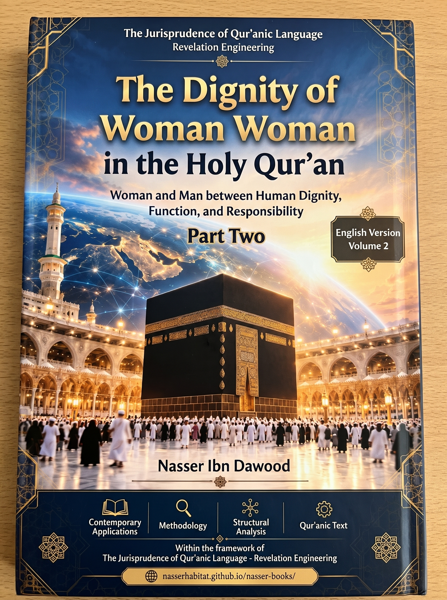

138. The Dignity of Women in the Qur’an — Part II: Woman and Man: Restoring the Balance of Relationships and the Responsibility of Stewardship

A methodological study applying QCROS and Qur’anic linguistic jurisprudence to examine the relational and legal balance between woman and man across voice and agency, the solemn marriage covenant, polygyny and fairness, milk al-yamīn, divorce and waiting periods, and the critique of legal evasions.
Condensed conceptual adaptation; the Arabic work remains the primary source.
قراءة PDF داخل الموقع / Read the PDF on this website
جارٍ تجهيز القارئ… / Preparing the reader…